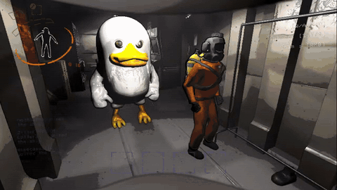
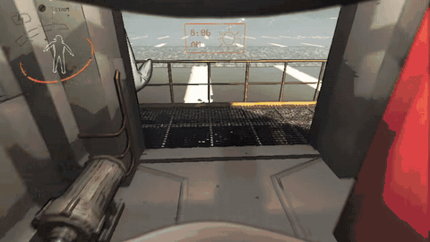
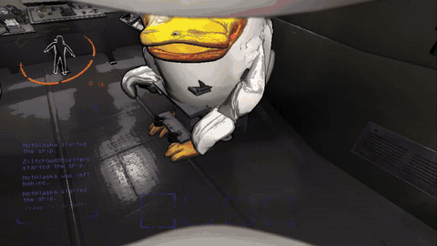

Lethal Company review: co-op horror, but everyone is a duck

Lethal Company is a co-op horror game from Zeekerss. You and your crew work for the Company, landing on abandoned moons to grab scrap and sell it before you miss the profit quota. One person can stay on the ship and guide everyone with the radar and the terminal, or you can all go in together. Miss the quota and you're done.
We loaded it with every duck mod we could find, so the crew are ducks and half the scrap is ducks too. When the game asked for my role on the team, I put dynamic top duck. One mod dropped us into the Upside Down with a Demogorgon, and we got out with a $1,300 El Ducko. A giant woodpecker that looked friendly was not, and somehow we still made the first quota.

With the money we teleported to a modded IKEA moon, got split up, and brought a boombox to a baboon hawk party. Our last run ended back at the ship with two laughing doppelgangers chasing us inside. The duck suits are so big that whoever dies watches a giant duck head for the rest of the round.


It's $9.99 on Steam. The full duck run is below.